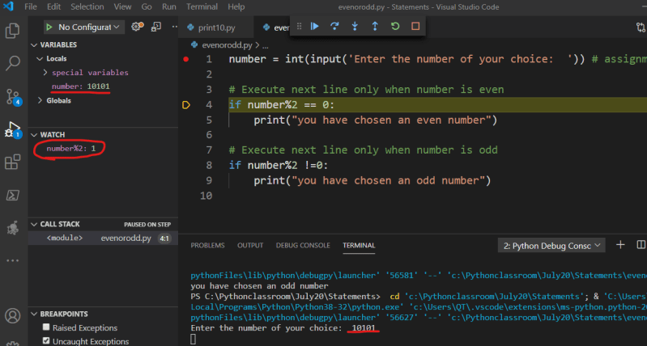

12 Conditional Statements
Conditional Statements
- If you consider the code
print(1) print(2) print(3) print(4) print(5) print(6) print(7) print(8) print(9) print(10) - Python will execute all the lines one after other, now lets try to write a program which will tell if the number is even or odd.
- Lets go back to Jarvis:
Hi Jarvis Remember 10 as number check if 10%2 == 0 if yes show 10 is even else show 10 is odd - Now part of the program still under-construction is as shown below
- To make it right we need to use if statement
- Now adding if to the program earlier
- This program looks ok but lets take dynamic input from user, now the program looks like
- Sample debugging screenshot

- Will we ever ask questions like
1. are you an engineer? 2. are you not an engineer? - Then we have done the same thing in the above program?. To solve this i have if/else statement
if <condition>: <true-block> else: <false block> - Now our program look like ```python number = int(input(‘Enter the number of your choice: ‘)) # assignment statement
if number%2 == 0: print(“you have chosen an even number”) else: print(“you have chosen an odd number”)
* Debug this program
* Now lets write a program which calculates average of 3 subjects and gives them grades
average = sub1+sub2+sub3/3
average >= 70 => distinction average >=60 => first class average >= 50 => second class third class
* Now lets speak with jarvis to make our conversation with python3 simple
Hi jarvis Take input from user and remember as maths Take input from user and remember as physics Take input from user and remember as chemistry now calculate (maths+physics+chemistry)/3 and remember as average when average >=70 print distinction when average >=60 print first class when average >= 50 print second class for all other cases print third class
* So our program will be
```python
maths = int(input("Enter the marks obtained in maths: "))
physics = int(input("Enter the marks obtained in physics: "))
chemistry = int(input("Enter the marks obtained in chemistry: "))
average = (maths+physics+chemistry)/3
if average >= 70:
print("Distinction")
elif average >= 60:
print("First class")
elif average >= 50:
print("Second class")
else:
print("Third class")
- Other way of solving this program could be
maths = int(input("Enter the marks obtained in maths: ")) physics = int(input("Enter the marks obtained in physics: ")) chemistry = int(input("Enter the marks obtained in chemistry: ")) average = (maths+physics+chemistry)/3 if average >= 70: print("Distinction") else: if average >= 60: print("first class") else: if average>=50: print("second class") else: print("third class") - One more of way
maths = int(input("Enter the marks obtained in maths: ")) physics = int(input("Enter the marks obtained in physics: ")) chemistry = int(input("Enter the marks obtained in chemistry: ")) average = (maths+physics+chemistry)/3 if average >= 70: print("Distinction") if 60 <= average < 70: print("First class") if 50 <= average < 60: print("second class") if average < 50: print("third class")